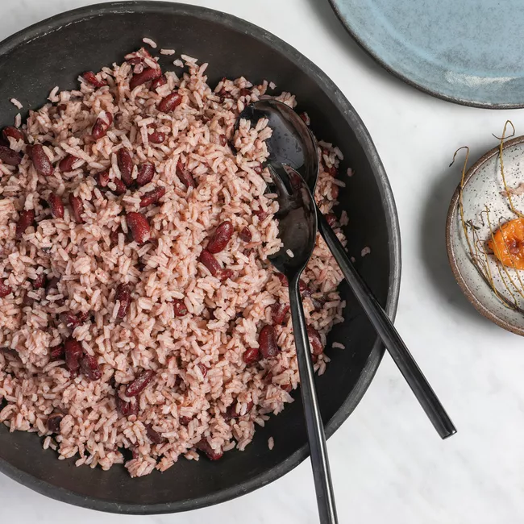

Jamaican Rice and Peas

Traditional Jamaican Rice and Peas
Jamaican rice and peas is a popular dish served at nearly every dinner table across the island. Growing up, we would have red beans and rice every Sunday and at special events such as Christmas dinners.
Traditionally, this recipe would take hours to make as Jamaicans sought to prepare nearly every ingredient from scratch. One such ingredient was fresh coconut milk.
Before blenders were popular, it was our assigned task as kids to sit and grate dried coconut meat every Sunday. Meanwhile, our mothers or grandmothers prepared the dried red beans.
I’ll be sharing a quicker way to prepare Jamaican rice and peas, including instructions for canned beans or coconut milk.
Ingredients
- 3 cups of rice
- 1 can of tinned or 1 cup of fresh red peas (either kidney beans or pigeon peas)
- 5 cloves of garlic (finely chopped)
- 1 uncut scotch bonnet pepper (1 jalapeno pepper may be used as a substitute)
- 3 Scallion (spring onions may be used as a substitute)
- 1 tin (or one cup) of coconut milk
- 1 teaspoon of salt
- 1 teaspoon of black pepper
- 2 sprigs of fresh thyme (2 teaspoons of dried thyme may be used as a substitute)
Preperation
- If you are using fresh peas then wash these.
- Pour on three cups of water and leave to soak overnight (nb - there is no need to do this if you are using tinned peas).
- Crush the garlic and add to seven cups of boiling water.
- If you are using fresh peas add them now and boil for 45 minutes.
- You can test to see if the peas are cooked by crushing them against the lid of the pot.
(If they crush easily, you are ready to move on to the next step)
**If you are using tinned peas just add them to the pot and move straight on to the next step.
- Add your coconut milk, rice, salt, black pepper and thyme to the mix.
- Crush the scallion (do not chop) and add this.
- Also add the uncut scotch bonnet pepper, **The pepper remains uncut so as to not make the rice spicy, just give it a subtle peppery flavour.
- The Rice and Peas should be ready after about 40 minutes (exact cooking time will depend on the brand of rice used).
- The Rice and Peas is now ready to serve!